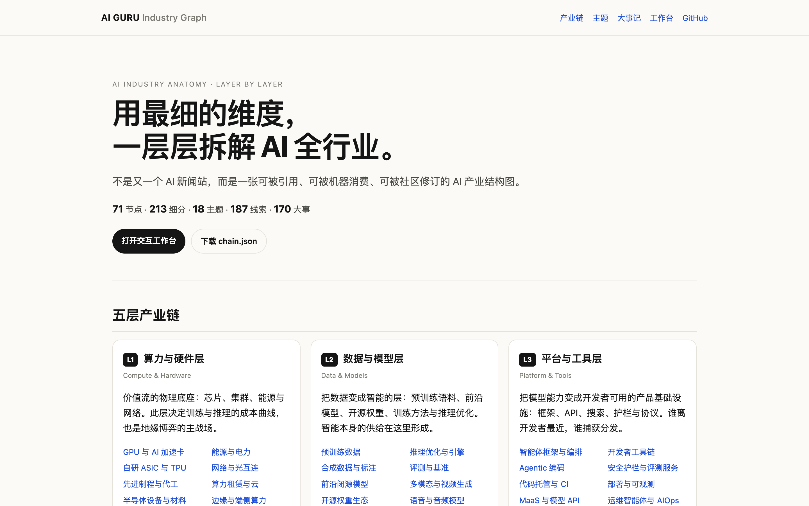
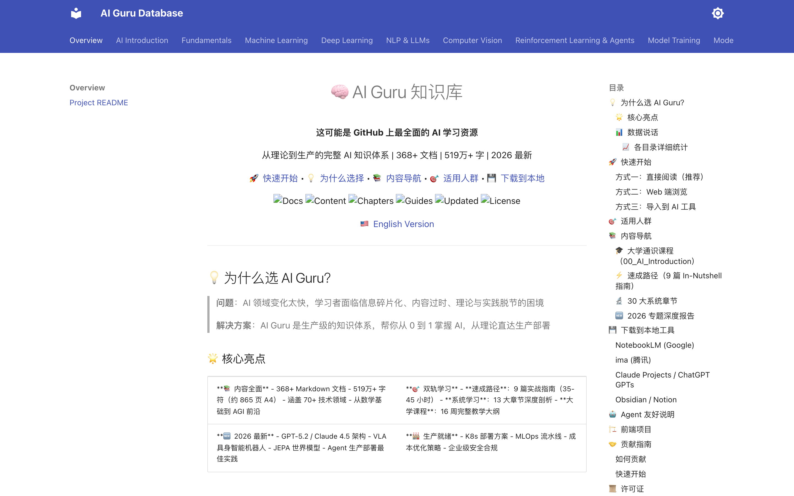

限定
正在注入检索索引（data/index.js）…
索引未加载
数据文件缺失或未生成，检索无处可查。
在 console/ 运行 make portal 后刷新本页。
| 命中 | 面 | 路径 | 更新 |
|---|
四个面，一屏预览




正在注入检索索引（data/index.js）…
索引未加载
数据文件缺失或未生成，检索无处可查。
在 console/ 运行 make portal 后刷新本页。
| 命中 | 面 | 路径 | 更新 |
|---|

